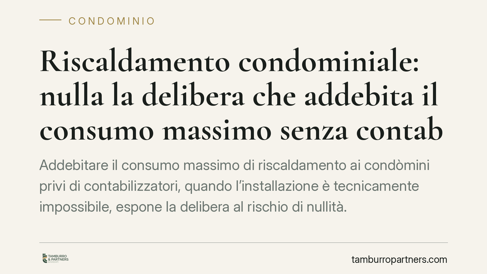

Riscaldamento condominiale: nulla la delibera che addebita il consumo massimo senza contabilizzatori
Addebitare il consumo massimo di riscaldamento ai condòmini privi di contabilizzatori, quando l'installazione è tecnicamente impossibile, espone la delibera al rischio di nullità. Il tema tocca da vicino amministratori e proprietari: un criterio di riparto presuntivo, non previsto dalla legge, può essere contestato senza i consueti limiti temporali e aprire alla restituzione di quanto versato in eccesso.

Delibera nulla sul riparto riscaldamento: il caso
In molti condomìni con impianto centralizzato non tutte le unità risultano dotate di sistemi di contabilizzazione del calore. Quando ciò dipende da un'impossibilità tecnica documentata — e non da una scelta di comodo del singolo — alcune assemblee hanno reagito addebitando a quei proprietari il consumo massimo stimato, come se avessero tenuto i termosifoni sempre accesi.
Un criterio di questo tipo non trova fondamento nella disciplina vigente. È un meccanismo presuntivo e sanzionatorio, che forza la ripartizione delle spese oltre quanto la legge consente all'assemblea di decidere. Da qui il profilo più delicato: non una semplice irregolarità, ma un vizio che può investire la validità stessa della delibera.
Inquadramento normativo
La materia è regolata dall'art. 9, comma 5, del D.Lgs. 102/2014, come modificato dal D.Lgs. 141/2016. La norma impone, negli edifici con impianto centralizzato, l'installazione di sistemi di contabilizzazione del calore per misurare il consumo effettivo di ciascuna unità, con suddivisione delle spese in una quota a consumo e una quota per potenza termica impegnata, secondo la norma tecnica UNI 10200.
La disposizione prevede conseguenze specifiche per chi non installa i dispositivi pur potendolo fare: in quei casi la spesa può essere ripartita in base ai millesimi di potenza termica, non applicando un addebito punitivo da consumo massimo. Diverso è il caso dell'impossibilità tecnica accertata: qui l'obbligo non sorge, e trasformare l'impossibilità in una penalizzazione economica non ha base legale.
Sul piano della validità delle delibere, occorre distinguere. L'art. 1123 del Codice civile fissa i criteri legali di ripartizione delle spese. Secondo l'orientamento consolidato della giurisprudenza, la delibera che modifica i criteri legali di riparto in danno di un condòmino, senza il consenso dell'interessato o in difetto dei presupposti di legge, non è semplicemente annullabile ma nulla, perché incide su diritti individuali e non su mere modalità di gestione.
Nullità o annullabilità: perché cambia tutto
La differenza non è teorica e si misura in giorni. La delibera annullabile va impugnata entro trenta giorni (dall'approvazione per chi era presente e dissenziente, dalla comunicazione del verbale per gli assenti), ai sensi dell'art. 1137 c.c. Scaduto il termine, diventa definitiva.
La delibera nulla, invece, non è soggetta a quel termine: può essere contestata senza limiti temporali, perché il vizio è radicale. Il condòmino che scopra solo dopo mesi di aver subìto un riparto presuntivo illegittimo non resta privo di tutela per il solo decorrere dei trenta giorni.
Attenzione però alla distinzione di fondo: l'impossibilità tecnica deve essere documentata. Chi semplicemente non installa i contabilizzatori per inerzia, pur potendo, non rientra in questa protezione e va incontro alle conseguenze previste dalla norma per i non installanti.
Implicazioni pratiche
Per il condòmino con impossibilità tecnica accertata, l'addebito del consumo massimo è un costo che non deve sostenere. Se lo ha già pagato, le somme versate in eccesso sono in linea di principio ripetibili, cioè possono essere richieste indietro.
Per l'amministratore, il messaggio è altrettanto netto: predisporre un criterio di riparto che penalizzi forfettariamente chi non ha potuto installare i dispositivi significa esporre il condominio a contenziosi e a delibere caducabili nel tempo. Il criterio corretto resta quello fondato sulla contabilizzazione effettiva e, in subordine, sui millesimi di potenza termica installata.
Cosa fare in concreto
- Verificare la natura del mancato conteggio: distinguere l'impossibilità tecnica documentata dalla mancata installazione per inerzia, perché le conseguenze divergono.
- Controllare il criterio in delibera: se l'assemblea ha applicato un addebito da "consumo massimo" a chi non poteva installare i contabilizzatori, segnalare per iscritto il vizio all'amministratore.
- Non dare per persa l'impugnazione oltre i 30 giorni: se il vizio è di nullità, la contestazione non è preclusa dal decorso del termine; valutare comunque tempestivamente ogni azione.
- Richiedere la restituzione dell'eccedenza: documentare gli importi versati in base al criterio illegittimo e formulare domanda di rimborso.
- Sottoporre la bozza di criterio a verifica legale: è opportuno esaminare il metodo di riparto prima dell'approvazione assembleare, per prevenire delibere caducabili.
*Contributo informativo a cura di Tamburro & Partners Avvocati. Non costituisce parere legale.*
Ogni condominio ha una storia a sé.
Se gestisci un'amministrazione e vuoi un confronto su una specifica questione condominiale, scrivi allo studio. Ti rispondiamo entro un giorno lavorativo.